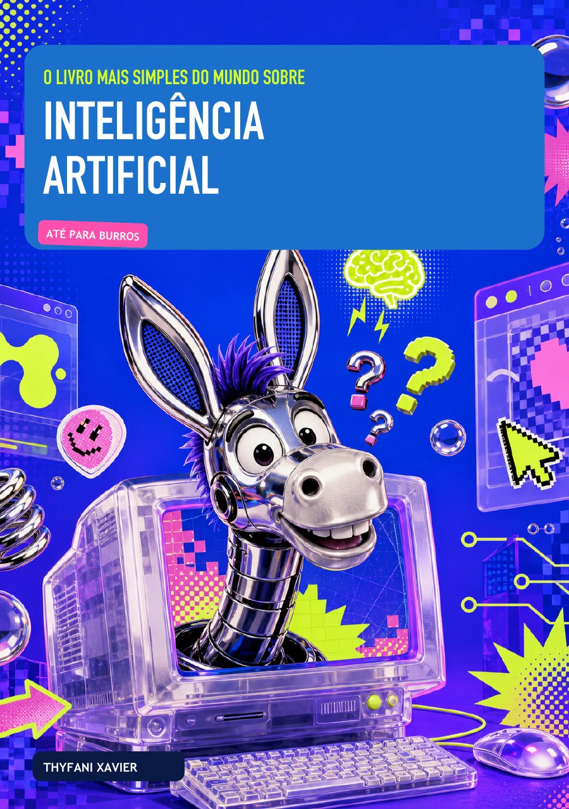
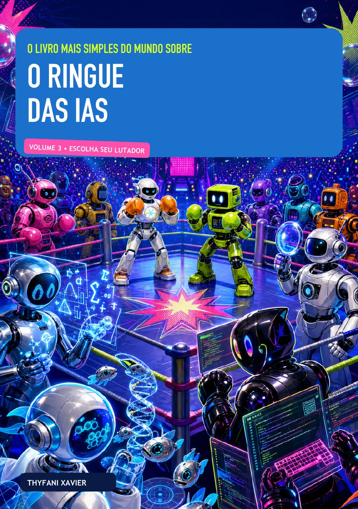

MCP↗
Power BI DAX Agent
Agente especializado em DAX e modelagem semântica, integrado ao Power BI Modeling MCP para inspecionar, validar e evoluir modelos com segurança.
Power BIDAXMCPClaude
Projetos que desenvolvi e materiais que compartilho sobre dados, automação e inteligência artificial.
Projetos de BI, análise, automação e IA com contexto, decisão técnica e resultado.
Agente especializado em DAX e modelagem semântica, integrado ao Power BI Modeling MCP para inspecionar, validar e evoluir modelos com segurança.
Site desenvolvido para apresentar um espaço de cultura, ancestralidade e arte no interior de Minas Gerais, com identidade própria e acesso direto às informações do projeto.
Analista financeiro pessoal com LLM local para categorizar extratos, detectar padrões e responder perguntas em português sem enviar dados para a nuvem.
Segmentação de clientes por Recência, Frequência e Valor monetário no Power BI. Projeto com destaque na comunidade e artigo no Medium.
Pipeline para automação de prospecção de clientes, organização de leads e priorização de contatos com métricas de vendas.
Integração de IA com consultas SQL para gerar, revisar e interpretar queries a partir de perguntas em linguagem natural.
Sistema automatizado de análise e aprovação de investimentos com lógica de negócio estruturada.
Sistema de ranking e avaliação de performance para comparar métricas de equipes ou produtos de forma visual.
Uma coleção em três volumes para entender conceitos, melhorar comandos e comparar diferentes inteligências artificiais.

Uma introdução aos fundamentos e às possibilidades da IA no trabalho e no cotidiano.
Ler e-book ↗Princípios para construir instruções mais claras e obter respostas melhores das ferramentas de IA.
Ler e-book ↗
Uma comparação prática para reconhecer diferenças e escolher a IA adequada para cada desafio.
Ler e-book ↗